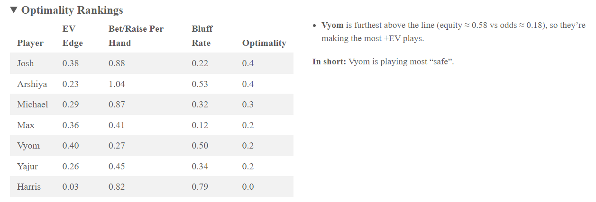

Once every action is enriched with equity, EV, bluff-probability, and stack context, we use 3 key plots to surface patterns at a glance. All code lives in the server file’s renderplot() calls.
7.0.1 Stack and Plot Volume Area Chart
This chart shows how each player’s stack evolves hand-by-hand alongside the total pot size.
The aggression bubble plot distils each player’s betting profile into a single point using four visual channels:
Horizontal Axis (x = Average Pot odds) The mean price a player has paid for calls, bets, and raises. Lower values indicate cheaper bets (tighter play) wile higher values signal looser, more speculative actions.
Vertical axis ( y = Average Equity) The mean hand strength (equity) when they chose to invest. Higher values reveal a focus on value spots whereas lower values suggest frequent “chasing” of draws or marginal holdings.
Bubble Area (size = # of bets & raises) Encodes aggression volume. Large bubbles show players who bet or raise often, small bubbles mark those who pick their spots more conservatively.
Colour Gradient (colour = Bluff Rate) A sky blue -> firebrick spectrum highlights how often a player’s actions fall into the bluff state as estimated by the HMM. Blue tones denote disciplined, predominantly value-driven play, red tones flag high bluff propensity.
The 45° dashed line is the break-even baseline: any bubble above it represents a player whose average equity exceeded average price paid—i.e., +EV play.
A large blue bubble high and to the left signals a “solid reg” who bets often but primarily in value spots.
A large red bubble low and to the right reveals a “spewy bluffer” whose aggression outpaces hand quality.
Clusters often emerge: tight-aggressive (“TAG”) players form a medium-sized, moderately red cluster above the line; tight-passive players hug the lower-left, small-light bubbles; and loose players scatter rightward with varied colours.
7.0.2.0.2 Why This Works
Multidimensional view: condenses four metrics into a single, intuitive chart.
Immediate outlier detection: extreme bubbles and positioning jump out, guiding coaches where to focus.
Comparative benchmarking: everyone shares the same axes, making peers comparisons trivial.
7.0.3 EV Scatter Plot
For a selected player, we chart per-action EV over time. A zero-EV dashed highlights wins versus losses.
7.0.3.0.1 Key elements
Hand Number (x-axis). Chronological order of hands lets you see hot and cold streaks.
EV per Action (y-axis). Positive value denote “+EV” decisions; negative values indicate chip losing moves
Colour = Action type. Differentiates Calls, bets, and raises so you can spot which action type carries the most variance.
Code
# 21) ── EV-TREND PLOT FOR A SINGLE PLAYER output$ev_trend <-renderPlot({req(rv(), input$focus_player !="Summary") df <-rv() %>%filter( Player == input$focus_player, Action %in%c("bet", "call", "raise") # ← only keep the EV‐bearing actions ) %>%mutate(ev_score =coalesce(EV_call, EV_bet, EV_raise)) max_abs <-max(abs(df$ev_score), na.rm =TRUE)ggplot(df, aes(x = HandNumber, y = ev_score, color = Action)) +geom_hline(yintercept =0, linetype ="dashed", color ="grey50") +geom_point(size =5, alpha =0.8) +scale_x_continuous(breaks =unique(df$HandNumber)) +scale_y_continuous(limits =c(-max_abs, max_abs)) +labs(title =paste(input$focus_player, "EV over Hands"),x ="Hand Number",y ="EV (per action)",color ="Action" ) +theme_minimal(base_size =14) })
7.0.4 Optimal Table and Headline Summary
The Optimality Table ranks each player by their composite “Optimality” score and lays out the three components that feed into it, EV Edge, Bet/Raise Rate and Bluff Rate, so you can pinpoint exactly why one player sits above or below another. By presenting why one player sits above or below another. - EV Edge (= Average Equity – Avg Pot Odds) shows pure decision quality.
Bet/Raise Rate (= Aggressive Actions/Hands Played) measures how often a player seizes spots.
Bluff Rate (= Mean HMM Bluff Probability) captures their discipline with inpaired or weak holdings
Optimality multiplies those three factors into one number, so a high-scoring player must excel on all fronts
Immediately next to the table, the Headline Summary pulls out the story in two sentences:

This detailed table plus a concise, human read-able paragraph ensures that both data savvy coaches and casual observers instantly grasp who’s excelling, who is leaking chips and which levers each player should pull to improve.